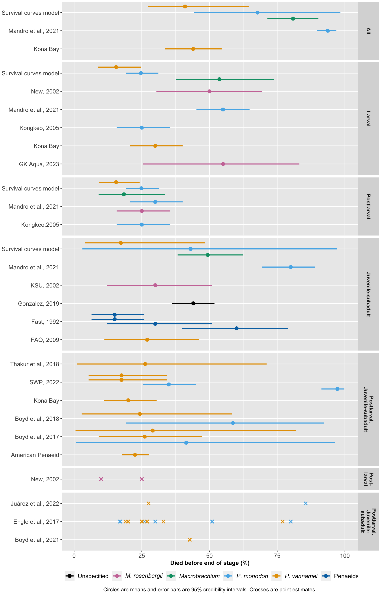
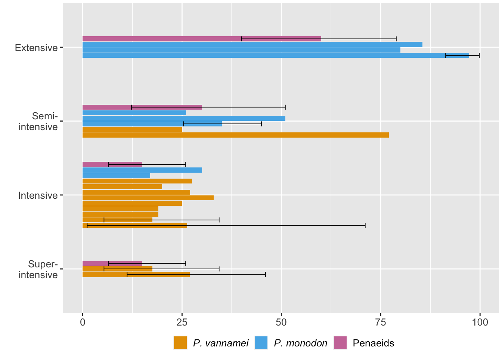

library(tidyverse)
library(extraDistr)
library(kableExtra)
library(ggplot2)
sample_beta <- function(mean_val, sd_val) {
n <- 10000
# calculate alpha and beta parameters
var_val <- sd_val^2
alpha <- ((1 - mean_val) / var_val - 1 / mean_val) * mean_val^2
beta <- alpha * (1 / mean_val - 1)
# Check and adjust alpha and beta to ensure they are valid for the beta distribution
if (alpha <= 0 | beta <= 0) {
stop("Invalid shape parameters: alpha and beta must be greater than 0.")
}
# randomization seed for replicability
set.seed(123)
# sample from beta distribution
sample_beta <- rbeta(n, alpha, beta)
#sample_beta[sample_beta < 0] <- 0
return(sample_beta)
}
# function to print tables
show.table=function(x){
kable(x, table.attr = 'data-quarto-disable-processing="true"') %>%
kableExtra::kable_styling(full_width=FALSE, position="center", font_size=12,
bootstrap_options = c("condensed"))
}2 Quantitative literature analysis
This chapter compares our estimate from the first chapter with those found in the wider academic and gray literature. To do so, we review several different estimates of the survival rate of shrimps to the end of a given stage of production.
There are two strategies for estimating pre-slaughter mortality rates. The first is to take overall estimates, aggregated across production types, weighting them proportional to how credible each source is. The second is to break down the pre-slaughter mortality rates according to the production style of the farm, as rates may differ according to how intensive production is. Then, we can aggregate the results by weighting them according to what percentage of shrimps comes from each production type. One can carry out a similar approach by breaking down mortality rates by species, and then weighing the aggregate results by the proportion of overall farmed shrimp production that each species represents.
We start by uploading packages and functions.
2.1 Studies
Most sources provide ranges, but do not indicate how much of the total variability the ranges are intended to capture. In such cases, we assume that the ranges intend to capture what is typical, rather than true ranges. Consequently, we interpret the mid-point of the range as the mean and the half-length as one standard deviation. The exception was when the authors made it clear that they included atypical outcomes, in which case we treat the range as covering two standard deviations.
2.1.1 FAO, 2009
On super-intensive systems, FAO (2009) reports that ongrowing ponds have a survival rate of 55-91 percent.
We treated the survival rate range as two standard deviations given how large it is.
FAO_mortality_mean<-mean(c(1-.55, 1-.91)) # midpoint mortality rate
FAO_mortality_sd<- ((1-.55)- FAO_mortality_mean)/2 # length between midpoint and either end is *two* sds
FAO<-data.frame(
Reference = c("FAO, 2009"),
Mean_Mortality = c(FAO_mortality_mean),
SD_Mortality = c(FAO_mortality_sd),
Stage = c("Juvenile-subadult"),
Production_Type = c("Super-Intensive"),
Species = c("P. vannamei"),
Country = c("Not Specified"))
show.table(FAO)| Reference | Mean_Mortality | SD_Mortality | Stage | Production_Type | Species | Country |
|---|---|---|---|---|---|---|
| FAO, 2009 | 0.27 | 0.09 | Juvenile-subadult | Super-Intensive | P. vannamei | Not Specified |
2.1.2 Gonzalez, 2019
Gonzalez (2019) reports:
“In Texas, the 2017 survival rates of stocked shrimps ranged from 4 to 68 percent. On average, farmers see survival rates of 56 percent, data from TPWD show.”
This presumably covers all species farmed in Texas, though it is unclear. Because the mean is so much closer than the high end of the range the low end, we assume 4 percent survival is an outlier. We assume that the upper end of the range is three standard deviations above the mean.
Gonzalez_sd<- (.68-.56)/3
Gonzalez<-data.frame(
Reference = c("Gonzalez, 2019"),
Mean_Mortality = c(1-.56),
SD_Mortality = c(Gonzalez_sd),
Stage = c("Juvenile-subadult"),
Production_Type = c("All"),
Species = c("All"),
Country = c("Not Specified"))
show.table(Gonzalez)| Reference | Mean_Mortality | SD_Mortality | Stage | Production_Type | Species | Country |
|---|---|---|---|---|---|---|
| Gonzalez, 2019 | 0.44 | 0.04 | Juvenile-subadult | All | All | Not Specified |
2.1.3 Fast, 1992
On page 346, Fast (1992) reports that the survival rate on ongrowing farms differs by production style. Survival on extensive farms is “<60”%, “60 to 80” on semi-intensive farms, “80-90” on intensive farms, and “80-90”on super-intensive farms. In the absence of better information, we treated “<60%” as a mean of 40%, with a standard deviation of 10%.
Fast_semiintensive_mean<- mean(c(1-.60, 1-.80))
Fast_semiintensive_sd<- (1-.60) - Fast_semiintensive_mean
Fast_intensive_mean<- mean(c(1-.80, 1-.90))
Fast_intensive_sd<- (1-.80) - Fast_intensive_mean
Fast_superintensive_mean<- mean(c(1-.80, 1-.90))
Fast_superintensive_sd<- (1-.80) - Fast_superintensive_mean
Fast<-data.frame(
Reference = c("Fast, 1992","Fast, 1992","Fast, 1992","Fast, 1992"),
Mean_Mortality = c((1-.40),Fast_semiintensive_mean, Fast_intensive_mean, Fast_superintensive_mean),
SD_Mortality = c(.10, Fast_semiintensive_sd, Fast_intensive_sd, Fast_superintensive_sd),
Stage = c("Juvenile-subadult", "Juvenile-subadult","Juvenile-subadult","Juvenile-subadult"),
Production_Type = c("Extensive", "Semi-Intensive", "Intensive", "Super-Intensive"),
Species = c("Penaeids", "Penaeids","Penaeids","Penaeids"),
Country = c("Not Specified","Not Specified","Not Specified","Not Specified"))
show.table(Fast)| Reference | Mean_Mortality | SD_Mortality | Stage | Production_Type | Species | Country |
|---|---|---|---|---|---|---|
| Fast, 1992 | 0.60 | 0.10 | Juvenile-subadult | Extensive | Penaeids | Not Specified |
| Fast, 1992 | 0.30 | 0.10 | Juvenile-subadult | Semi-Intensive | Penaeids | Not Specified |
| Fast, 1992 | 0.15 | 0.05 | Juvenile-subadult | Intensive | Penaeids | Not Specified |
| Fast, 1992 | 0.15 | 0.05 | Juvenile-subadult | Super-Intensive | Penaeids | Not Specified |
2.1.4 Kongkeo, 2005
In an overview of P. monodon aquaculture, Kongkeo (2005) writes:
“Nauplii are usually stocked at 100 000/tonne and cultured up to late mysis or early PL with approximately 70-80 percent survival rate. They are then transferred to a new tank and cultured up to PL 12-15; a further 70-80 percent survival rate is achieved in this stage.”
Kongkeo_larval_mean<- mean(c(1-.70, 1-.80))
Kongkeo_larval_sd<- (1.-.70) - Kongkeo_larval_mean
Kongkeo_postlarval_mean<- mean(c(1-.70, 1-.80))
Kongkeo_postlarval_sd<- (1.-.70) - Kongkeo_larval_mean
Kongkeo<-data.frame(
Reference = c("Kongkeo, 2005","Kongkeo,2005"),
Mean_Mortality = c(Kongkeo_larval_mean,Kongkeo_postlarval_mean),
SD_Mortality = c(.05,.05),
Stage = c("Larval", "Postlarval"),
Production_Type = c("All", "All"),
Species = c("P. monodon", "P. monodon"),
Country = c("Not Specified", "Not specified"))
show.table(Kongkeo)| Reference | Mean_Mortality | SD_Mortality | Stage | Production_Type | Species | Country |
|---|---|---|---|---|---|---|
| Kongkeo, 2005 | 0.25 | 0.05 | Larval | All | P. monodon | Not Specified |
| Kongkeo,2005 | 0.25 | 0.05 | Postlarval | All | P. monodon | Not specified |
2.1.5 Kona Bay
To our knowledge, Kona Bay only produces P. vannamei broodstock. They have three breeds, one focused on growth, another on survival, and another one that is balanced between the two. Here, we take performance data from the “balance” production line, which claims a 70% survival rate to the postlarval stage and a 75%-85% survival rate from the postlarval stage to slaughter. We apply the standard deviation of the latter to the former, as zero variability in larval mortality is implausible.
Kona_pl_mean<- mean(c(1-.75,1-.85))
Kona_pl_sd<- (1-.75)- Kona_pl_mean
Kona<-data.frame(
Reference = c("Kona Bay","Kona Bay"),
Mean_Mortality = c((1-.70),Kona_pl_mean),
SD_Mortality = c(Kona_pl_sd,Kona_pl_sd),
Stage = c("Larval", "Postlarval, Juvenile-subadult"),
Production_Type = c("All", "All"),
Species = c("P. vannamei", "P. vannamei"),
Country = c("Not Specified","Not specified"))
overall_mortality_kona<- 1-((1-sample_beta(Kona[1,"Mean_Mortality"],Kona[1,"SD_Mortality"]))* (1-sample_beta(Kona[2,"Mean_Mortality"],Kona[2,"SD_Mortality"])))
overall_kona<-data.frame(
Reference = c("Kona Bay"),
Mean_Mortality = c(mean(overall_mortality_kona)),
SD_Mortality = c(sd(overall_mortality_kona)),
Stage = c("All"),
Production_Type = c("All"),
Species = c("P. vannamei"),
Country = c("Not Specified"))
Kona<-rbind(Kona, overall_kona)
show.table(Kona)| Reference | Mean_Mortality | SD_Mortality | Stage | Production_Type | Species | Country |
|---|---|---|---|---|---|---|
| Kona Bay | 0.3000000 | 0.0500000 | Larval | All | P. vannamei | Not Specified |
| Kona Bay | 0.2000000 | 0.0500000 | Postlarval, Juvenile-subadult | All | P. vannamei | Not specified |
| Kona Bay | 0.4400035 | 0.0534816 | All | All | P. vannamei | Not Specified |
2.1.6 American Penaeid
American Penaeid uses P. vannamei broodstock only. Its stated survival rate is 75-80%, which we confirmed via a phone call represents the postlarval stage onwards (i.e., it doesn’t include the larval stage). The operator we spoke with couldn’t confirm what exactly the range reported represented, but we interpret it as what is typical given that she said it was based on 10 years of experience.
AP_mean<- mean(c(1-.75, 1-.80))
AP_sd<- (1.-.75) - AP_mean
AP<-data.frame(
Reference = c("American Penaeid"),
Mean_Mortality = c(AP_mean),
SD_Mortality = c(AP_sd),
Stage = c("Postlarval, Juvenile-subadult"),
Production_Type = c("Intensive and Super-Intensive"),
Species = c("P. vannamei"),
Country = c("Not Specified"))
show.table(AP)| Reference | Mean_Mortality | SD_Mortality | Stage | Production_Type | Species | Country |
|---|---|---|---|---|---|---|
| American Penaeid | 0.225 | 0.025 | Postlarval, Juvenile-subadult | Intensive and Super-Intensive | P. vannamei | Not Specified |
2.1.7 Boyd et al., 2017
Boyd et al. (2017) conducted a survey that “included 34 farms for whiteleg shrimp, Litopenaeus vannamei, and five farms for black tiger shrimp, Penaeus monodon, in Thailand and 28 farms for whiteleg shrimp and 24 farms for black tiger shrimp in Vietnam” (p. 203). All production types were sampled (except super-intensive facilities, which are thought to be rare in Vietnam and Thailand): “The interview teams…selected possible farms in proportion to the percentage of extensive, semi-intensive, and intensive shrimp culture thought to occur in each country” (p. 203).
The survival rates are reported below (note that they quantify variability using standard errors rather than standard deviations):
P. vannamei: “Farmers reported average survival of shrimp from stocking to harvest of 73.9% (1.7%) in Thailand and 70.8% (4.4%) in Vietnam” (p. 209).
Page 214 (on P. monodon): “The survival of shrimp from stocking to harvest varied from less than 10% to nearly 100% with an average of 58.4% (6.1%)”
The authors discuss postlarvae, so we interpret the mortality rates to apply from the PL stage onwards, and to exclude larvae.
#convert SEs to SDs using the sample sizes
vannamei_thailand_sd<- .017*sqrt(34)
vannamei_vietnam_sd<- .044*sqrt(28)
monodon_sd<- .061*sqrt((24))
Boyd<-data.frame(
Reference = c("Boyd et al., 2017","Boyd et al., 2017","Boyd et al., 2017"),
Mean_Mortality = c((1-.739),(1-.708),(1-.584)),
SD_Mortality = c((vannamei_thailand_sd),(vannamei_vietnam_sd),(monodon_sd)),
Stage = c("Postlarval, Juvenile-subadult", "Postlarval, Juvenile-subadult", "Postlarval, Juvenile-subadult"),
Production_Type = c("Extensive, Semi-Intensive, and Intensive","Extensive, Semi-Intensive, and Intensive","Semi-Intensive and Intensive"),
Species = c("P. vannamei", "P. vannamei", "P. monodon"),
Country = c("Thailand", "Vietnam", "Vietnam"))
show.table(Boyd)| Reference | Mean_Mortality | SD_Mortality | Stage | Production_Type | Species | Country |
|---|---|---|---|---|---|---|
| Boyd et al., 2017 | 0.261 | 0.0991262 | Postlarval, Juvenile-subadult | Extensive, Semi-Intensive, and Intensive | P. vannamei | Thailand |
| Boyd et al., 2017 | 0.292 | 0.2328261 | Postlarval, Juvenile-subadult | Extensive, Semi-Intensive, and Intensive | P. vannamei | Vietnam |
| Boyd et al., 2017 | 0.416 | 0.2988377 | Postlarval, Juvenile-subadult | Semi-Intensive and Intensive | P. monodon | Vietnam |
2.1.8 Boyd et al., 2018
Boyd et al. (2018) surveyed 89 P. vannamei and 11 P. monodon farms in India.
They report that “in this study, values ranged from nil at two farms to 100% at another L. vannamei farm—the average was 75.8 ± 1.57%. Survival of P. monodon ranged from 10 to 80% (\(\bar{X}\) = 41.4 ± 5.9%)” (p. 558).
As this report is an extension of Boyd et al. (2017), we assume the reported figures are means and standard errors.
vannamei_india_sd<- .0157*sqrt(89)
monodon_india_sd<- .059*sqrt((11))
Boyd2018<-data.frame(
Reference = c("Boyd et al., 2018","Boyd et al., 2018"),
Mean_Mortality = c((1-.758),(1-.414)),
SD_Mortality = c((vannamei_india_sd),(monodon_india_sd)),
Stage = c("Postlarval, Juvenile-subadult", "Postlarval, Juvenile-subadult"),
Production_Type = c("Extensive, Semi-Intensive, and Intensive","Extensive, Semi-Intensive, and Intensive"),
Species = c("P. vannamei", "P. monodon"),
Country = c("India", "India"))
show.table(Boyd2018)| Reference | Mean_Mortality | SD_Mortality | Stage | Production_Type | Species | Country |
|---|---|---|---|---|---|---|
| Boyd et al., 2018 | 0.242 | 0.1481135 | Postlarval, Juvenile-subadult | Extensive, Semi-Intensive, and Intensive | P. vannamei | India |
| Boyd et al., 2018 | 0.586 | 0.1956809 | Postlarval, Juvenile-subadult | Extensive, Semi-Intensive, and Intensive | P. monodon | India |
2.1.9 Thakur et al., 2018
In Table 2 of Thakur et al. (2018), the authors report that from stocking to harvest survival rates at intensive P. vannamei farms in Vietnam average 73.83% with a standard deviation of 19.29%.
Thakur<-data.frame(
Reference = c("Thakur et al., 2018"),
Mean_Mortality = 1-.7383,
SD_Mortality = .1929,
Stage = c("Postlarval, Juvenile-subadult"),
Production_Type = c("Intensive"),
Species = c("P. vannamei"),
Country = c("Vietnam"))
show.table(Thakur)| Reference | Mean_Mortality | SD_Mortality | Stage | Production_Type | Species | Country |
|---|---|---|---|---|---|---|
| Thakur et al., 2018 | 0.2617 | 0.1929 | Postlarval, Juvenile-subadult | Intensive | P. vannamei | Vietnam |
2.1.10 Mandro et al., 2021
In their Package of Aquaculture Practices, the department of fisheries of the government of Kerala (Mandro et al., 2021) details expected survival of P. monodon and M. rosenbergii at different life stages.
Fo P. monodon they report:
- “In general, the survival rate during the larval rearing is 40-50%” (p. 195)
- “The survival rate from larva to PL is 65-75%” (p. 196)
- “Total production of 1.4-1.9 t/ha can be expected per crop with a survival rate of about 80%.” (p. 205)
For the latter we assume the same standard deviation as that of the larva–postlarva period. We infer the overall survival rate by sampling from the rates at each stage.
For M. rosenbergii they report:
- Postlarva “attains 16-21 mm size by next 15 days with a survival rate of 70-80%” (p. 223)
They did not report a survival rate for after the postlarval stage for M. rosenbergii.
Mandro_larval_monodon_mean<-mean(c(1-.40, 1-.50)) #midpoint mortality rate
Mandro_larval_monodon_sd<- (1-.40) - Mandro_larval_monodon_mean # length between midpoint and either end is *one* sd
Mandro_postlarval_monodon_mean<-mean(c(1-.65, 1-.75))
Mandro_postlarval_monodon_sd<- (1-.65) - Mandro_postlarval_monodon_mean
Mandro_postlarval_macrobrachium_mean<-mean(c(1-.70, 1-.80))
Mandro_postlarval_macrobrachium_sd<- (1-.70) - Mandro_postlarval_macrobrachium_mean
Mandro_adult_monodon_mean<- .80
Mandro_adult_monodon_sd<- Mandro_postlarval_monodon_sd
Mandro<-data.frame(
Reference = c("Mandro et al., 2021", "Mandro et al., 2021", "Mandro et al., 2021", "Mandro et al., 2021"),
Mean_Mortality = c(Mandro_larval_monodon_mean, Mandro_postlarval_monodon_mean, Mandro_postlarval_macrobrachium_mean, Mandro_adult_monodon_mean),
SD_Mortality = c(Mandro_larval_monodon_sd, Mandro_postlarval_monodon_sd, Mandro_postlarval_macrobrachium_sd, Mandro_adult_monodon_sd),
Stage = c("Larval","Postlarval","Postlarval",
"Juvenile-subadult"),
Production_Type = c("All", "All", "All", "All"),
Species = c("P. monodon", "P. monodon", "M. rosenbergii",
"P. monodon"),
Country = c("Not Specified","Not Specified","Not Specified", "Not Specified"))
overall_mortality_monodon<- 1-((1-sample_beta(Mandro[1,"Mean_Mortality"],Mandro[1,"SD_Mortality"]))* (1-sample_beta(Mandro[2,"Mean_Mortality"],Mandro[2,"SD_Mortality"]))*
(1-sample_beta(Mandro[4,"Mean_Mortality"],Mandro[4,"SD_Mortality"])))
overall_mon<-data.frame(
Reference = c("Mandro et al., 2021"),
Mean_Mortality = c(mean(overall_mortality_monodon)),
SD_Mortality = c(sd(overall_mortality_monodon)),
Stage = c("All"),
Production_Type = c("All"),
Species = c("P. monodon"),
Country = c("Not Specified"))
Mandro<-rbind(Mandro, overall_mon)
show.table(Mandro)| Reference | Mean_Mortality | SD_Mortality | Stage | Production_Type | Species | Country |
|---|---|---|---|---|---|---|
| Mandro et al., 2021 | 0.5500000 | 0.0500000 | Larval | All | P. monodon | Not Specified |
| Mandro et al., 2021 | 0.3000000 | 0.0500000 | Postlarval | All | P. monodon | Not Specified |
| Mandro et al., 2021 | 0.2500000 | 0.0500000 | Postlarval | All | M. rosenbergii | Not Specified |
| Mandro et al., 2021 | 0.8000000 | 0.0500000 | Juvenile-subadult | All | P. monodon | Not Specified |
| Mandro et al., 2021 | 0.9369562 | 0.0181689 | All | All | P. monodon | Not Specified |
2.1.11 New, 2002
In a manual for farming M. rosenbergii, New (2002, p.70) reports for survival from larva to postlarva that “40-60% is more normal in practice”.
New_larval_mean<-mean(c(1-.40, 1-.60))
New_larval_sd<- (1-.40) - New_larval_mean
New<-data.frame(
Reference = c("New, 2002"),
Mean_Mortality = c(New_larval_mean),
SD_Mortality = c(New_larval_sd),
Stage = c("Larval"),
Production_Type = c("All"),
Species = c("M. rosenbergii"),
Country = c("Not specified"))
show.table(New)| Reference | Mean_Mortality | SD_Mortality | Stage | Production_Type | Species | Country |
|---|---|---|---|---|---|---|
| New, 2002 | 0.5 | 0.1 | Larval | All | M. rosenbergii | Not specified |
2.1.12 KSU, 2002
The Kentucky State University Aquaculture Program report that survival of M. rosenbergii in Kentucky varies between 60% and 80% (p. 28). Earlier in the manual (p. 5) they report “The hatchery and nursery procedures required to grow 30- to 60-day-old freshwater shrimp juveniles for pond stocking are complex”, so we assume they are referring to the juvenile stage and categorize this as “Juvenile-subadult.”
KSU_mean<- mean(c(1-.60, 1-.80))
KSU_sd<- (1.-.60) - KSU_mean
KSU<-data.frame(
Reference = c("KSU, 2002"),
Mean_Mortality = c(KSU_mean),
SD_Mortality = c(KSU_sd),
Stage = c("Juvenile-subadult"),
Production_Type = c("All"),
Species = c("M. rosenbergii"),
Country = c("USA"))
show.table(KSU)| Reference | Mean_Mortality | SD_Mortality | Stage | Production_Type | Species | Country |
|---|---|---|---|---|---|---|
| KSU, 2002 | 0.3 | 0.1 | Juvenile-subadult | All | M. rosenbergii | USA |
2.1.13 GK Aqua, 2023
In an interview in the magazine Aquaculture Asia Pacific, the founder of an M. rosenbergii hatchery, GK Aqua, said “Overall, our average survival rates gradually reached 30% which is an industry standard”. In the prior sentence the author writes “The breakthrough was in 2020 [when it achieved mass production, stocking 150 larvae/L and […] consistently obtaining 50-60% survival rates”. We therefore assume survival rates are between 30% and 60%. As they are a hatchery, we assume these rates apply to the larval stage.
GKAqua_mean<- mean(c(1-.30, 1-.60))
GKAqua_sd<- (1.-.30) - GKAqua_mean
GKAqua<-data.frame(
Reference = c("GK Aqua, 2023"),
Mean_Mortality = c(GKAqua_mean),
SD_Mortality = c(GKAqua_sd),
Stage = c("Larval"),
Production_Type = c("All"),
Species = c("M. rosenbergii"),
Country = c("Malaysia"))
show.table(GKAqua)| Reference | Mean_Mortality | SD_Mortality | Stage | Production_Type | Species | Country |
|---|---|---|---|---|---|---|
| GK Aqua, 2023 | 0.55 | 0.15 | Larval | All | M. rosenbergii | Malaysia |
2.1.14 Shrimp Welfare Project, 2022
Shrimp Welfare Project conducted field visits in Vietnam. They report survival rates from different production styles in Vietnam, based on “obtained through interviews with farmers, researchers and other stakeholders” (p. 21). A personal correspondence confirms that the rates are from the ongrowing stage, and thus covers onwards from the postlarval stage. Table 3 (p.21) reports average survival rates of 5% (extensive), 60% (semi-intensive), 80% (intensive), and 85% (super-intensive). On page 28, the authors add ranges:
“Among the farms that we visited, including those whose water quality data were and were not collected, the reported survival rates varied among different farming models:
Intensive & super-intensive: between 75% and 90% Semi-intensive: between 60% and 70% Extensive: between 0.5% and 5%” These could be interpreted as true ranges, although some of them imply distributions that are at odds with the averages reported on page 21. Our interpretation of the discrepancy is that the averages also included the estimates of researchers and “other stakeholders,” whereas the ranges come from farmers only. As a compromise solution, we rely on the ranges provided by farmers only, but treat them as covering two standard deviations around the mean only.
SWP_extensive_mean<- mean(c(1-.005,1-.05))
SWP_extensive_sd<- (1-.005) - SWP_extensive_mean
SWP_semiintensive_mean<- mean(c(1-.60,1-.70))
SWP_semiintensive_sd<-(1-.60) - SWP_semiintensive_mean
SWP_intensive_mean<- mean(c(1-.75,1-.90))
SWP_intensive_sd<- (1-.75) - SWP_intensive_mean
SWP_superintensive_mean<- mean(c(1-.75,1-.90))
SWP_superintensive_sd<- (1-.75) - SWP_superintensive_mean
SWP<-data.frame(
Reference = c("SWP, 2022","SWP, 2022","SWP, 2022", "SWP, 2022"),
Mean_Mortality = c(SWP_extensive_mean,SWP_semiintensive_mean,SWP_intensive_mean,SWP_superintensive_mean),
SD_Mortality = c(SWP_extensive_sd,SWP_semiintensive_sd,SWP_intensive_sd,SWP_superintensive_sd),
Stage = c("Postlarval, Juvenile-subadult", "Postlarval, Juvenile-subadult", "Postlarval, Juvenile-subadult","Postlarval, Juvenile-subadult"),
Production_Type = c("Extensive","Semi-Intensive","Intensive", "Super-Intensive"),
Species = c("P. monodon", "P. monodon", "P. vannamei", "P. vannamei"), #The table says "mostly monodon" and "mostly vannamei", so these designations are simplifications.
Country = c("Vietnam", "Vietnam", "Vietnam", "Vietnam"))
show.table(SWP)| Reference | Mean_Mortality | SD_Mortality | Stage | Production_Type | Species | Country |
|---|---|---|---|---|---|---|
| SWP, 2022 | 0.9725 | 0.0225 | Postlarval, Juvenile-subadult | Extensive | P. monodon | Vietnam |
| SWP, 2022 | 0.3500 | 0.0500 | Postlarval, Juvenile-subadult | Semi-Intensive | P. monodon | Vietnam |
| SWP, 2022 | 0.1750 | 0.0750 | Postlarval, Juvenile-subadult | Intensive | P. vannamei | Vietnam |
| SWP, 2022 | 0.1750 | 0.0750 | Postlarval, Juvenile-subadult | Super-Intensive | P. vannamei | Vietnam |
2.1.15 Point estimates
We also found several sources that only reported an average or point estimate. These include:
- Table 3 in Engle et al. (2017), production intensities were estimated from stocking densities, compared to those reported in Table 1 of our previous report
- Boyd et al. (2021, p.780)
- Juárez et al. (2022, p. 7, p.9), production intensities were estimated in the same way as for Engle et al. (2017)
- New (2002), who reports that in postlarval indoor nurseries “survival rates of about 90% can be obtained up to 20 days” (p. 82), and in outdoor nurseries “survival from stocking (or re-stocking) until removal from the nursery ponds should be at least 75%” (p. 83). The latter applies to “newly metamorphosed postlarvae (PL) from hatcheries, or with juveniles from primary nurseries”, though we categorize this estimate as ‘postlarval’, for simplicity.
point.est<-data.frame(
Reference = c(rep("Engle et al., 2017", 13), "Boyd et al., 2021", "Juárez et al., 2022", "Juárez et al., 2022", "New, 2002", "New, 2002"),
Mean_Mortality = c(1-.49,1-.74,1-.83,1-.7, 1-.23,1-.75,1-.81,1-.81, 1-.2,1-.75,1-.67,1-.73,1-.8, 1-.573, 1-.145, 1-.725, 1-0.9, 1-0.75),
SD_Mortality = c(rep(NA, 18)),
Stage = c(rep("Postlarval, Juvenile-subadult ", 16), "Postlarval ", "Postlarval "),
Production_Type = c("Semi-intensive", "Semi-intensive", "Intensive", "Intensive", "Semi-intensive", "Semi-intensive", "Intensive", "Intensive", "Extensive", "Intensive", "Intensive", "Intensive", "Intensive", "Mixed/All", "Extensive", "Intensive", "Mixed/All", "Mixed/All"),
Species = c("P. monodon", "P. monodon","P. monodon","P. monodon", "P. vannamei", "P. vannamei", "P. vannamei", "P. vannamei", "P. monodon", "P. vannamei", "P. vannamei", "P. vannamei", "P. vannamei", "P. vannamei", "P. monodon", "P. vannamei", "M. rosenbergii", "M. rosenbergii"),
Country = c("Vietnam", "Vietnam","Vietnam","Vietnam","Vietnam","Vietnam","Vietnam","Vietnam", "Thailand", "Thailand", "Thailand", "Thailand", "Thailand", "Ecuador", "Indonesia", "Indonesia", "Not specified", "Not specified"))
show.table(point.est)| Reference | Mean_Mortality | SD_Mortality | Stage | Production_Type | Species | Country |
|---|---|---|---|---|---|---|
| Engle et al., 2017 | 0.510 | NA | Postlarval, Juvenile-subadult | Semi-intensive | P. monodon | Vietnam |
| Engle et al., 2017 | 0.260 | NA | Postlarval, Juvenile-subadult | Semi-intensive | P. monodon | Vietnam |
| Engle et al., 2017 | 0.170 | NA | Postlarval, Juvenile-subadult | Intensive | P. monodon | Vietnam |
| Engle et al., 2017 | 0.300 | NA | Postlarval, Juvenile-subadult | Intensive | P. monodon | Vietnam |
| Engle et al., 2017 | 0.770 | NA | Postlarval, Juvenile-subadult | Semi-intensive | P. vannamei | Vietnam |
| Engle et al., 2017 | 0.250 | NA | Postlarval, Juvenile-subadult | Semi-intensive | P. vannamei | Vietnam |
| Engle et al., 2017 | 0.190 | NA | Postlarval, Juvenile-subadult | Intensive | P. vannamei | Vietnam |
| Engle et al., 2017 | 0.190 | NA | Postlarval, Juvenile-subadult | Intensive | P. vannamei | Vietnam |
| Engle et al., 2017 | 0.800 | NA | Postlarval, Juvenile-subadult | Extensive | P. monodon | Thailand |
| Engle et al., 2017 | 0.250 | NA | Postlarval, Juvenile-subadult | Intensive | P. vannamei | Thailand |
| Engle et al., 2017 | 0.330 | NA | Postlarval, Juvenile-subadult | Intensive | P. vannamei | Thailand |
| Engle et al., 2017 | 0.270 | NA | Postlarval, Juvenile-subadult | Intensive | P. vannamei | Thailand |
| Engle et al., 2017 | 0.200 | NA | Postlarval, Juvenile-subadult | Intensive | P. vannamei | Thailand |
| Boyd et al., 2021 | 0.427 | NA | Postlarval, Juvenile-subadult | Mixed/All | P. vannamei | Ecuador |
| Juárez et al., 2022 | 0.855 | NA | Postlarval, Juvenile-subadult | Extensive | P. monodon | Indonesia |
| Juárez et al., 2022 | 0.275 | NA | Postlarval, Juvenile-subadult | Intensive | P. vannamei | Indonesia |
| New, 2002 | 0.100 | NA | Postlarval | Mixed/All | M. rosenbergii | Not specified |
| New, 2002 | 0.250 | NA | Postlarval | Mixed/All | M. rosenbergii | Not specified |
2.2 Results
The data is largely not based on any specific dataset, but instead on testimony and perceptions of general consensus. There is no guarantee that the different estimates are fully independent of one another. Thus, we do not conduct a meta-analysis. Instead, we present the mean and 95% credibility intervals in a forest plot by sampling from the beta distribution using each study’s mean and standard deviation. Since we do not have access to event counts and totals, the sampling approach ensures that the distributions are bounded between 0 and 1. We combine the datasets made above and clean the data ready for plotting.
#combine datasets
preslaughtermortality<-data.frame(rbind(
FAO, Fast, Gonzalez, Kongkeo,Kona,AP,Boyd, Boyd2018,
Thakur, Mandro, New, KSU, GKAqua, SWP))
# sample distributions based on means and standard deviations
preslaughtersamples_list <- mapply(sample_beta, preslaughtermortality$Mean_Mortality, preslaughtermortality$SD_Mortality)
#extract the central 95% of the data and attach it
preslaughtersamples<-t(data.frame(apply(preslaughtersamples_list, 2, function(x) c(mean = mean(x), quantile(x, probs = c(0.025, 0.975))))))
preslaughtermortality<-cbind(preslaughtermortality, preslaughtersamples)
# add row number as a variable for the summary figure
preslaughtermortality <- preslaughtermortality %>% mutate(ID = row_number())
# Sort from lowest to highest production density for figure
preslaughtermortality$Production_Type<- ifelse((preslaughtermortality$Production_Type == "Semi-Intensive and Intensive"|preslaughtermortality$Production_Type == "Intensive and Super-Intensive"|preslaughtermortality$Production_Type == "Extensive, Semi-Intensive, and Intensive"|preslaughtermortality$Production_Type == "All"), "Mixed/All", preslaughtermortality$Production_Type)
preslaughtermortality$Production_Type<- ifelse((preslaughtermortality$Production_Type == "Semi-Intensive"), "Semi-intensive", preslaughtermortality$Production_Type)
custom_order <- c("Extensive", "Semi-intensive", "Intensive", "Super-Intensive","Mixed/All")
preslaughtermortality$Production_Type <- factor(preslaughtermortality$Production_Type, levels = custom_order)
preslaughtermortality <- preslaughtermortality[order(preslaughtermortality$Production_Type), ]
# Sort from earliest to latest life stage for summary figure facet wrap
custom_order <- c("All", "Larval", "Postlarval",
"Juvenile-subadult", "Postlarval, Juvenile-subadult", "Postlarval, Juvenile-subadult ")
preslaughtermortality$Stage <- factor(preslaughtermortality$Stage, levels = custom_order)
preslaughtermortality <- preslaughtermortality[order(preslaughtermortality$Stage), ]
preslaughtermortality$Species<-factor(preslaughtermortality$Species,
levels=c("P. vannamei", "P. monodon",
"M. rosenbergii", "Penaeids", "All"))Finally, we want to get our estimates form the survival curves model to compare to the literature review.
# load the data
## cumulative rates
vannamei.cumulative<-read.csv("../data/survival_curves/vannamei_model_slaughter_probs.csv", header=TRUE, sep=",")
monodon.cumulative<-read.csv("../data/survival_curves/monodon_model_slaughter_probs.csv", header=TRUE, sep=",")
macro.cumulative<-read.csv("../data/survival_curves/macro_model_slaughter_probs.csv", header=TRUE, sep=",")
## stage-specific rates
bystage.farm.shrimp<-read.csv("../data/survival_curves/bystage_farmed_shrimp_model_probs.csv", header=TRUE, sep=",")
bystage.df<- split(bystage.farm.shrimp, bystage.farm.shrimp$species) # split up the farmed shrimp by species so we can calculate averages by species
bystage.vannamei<-bystage.df$vannamei
bystage.monodon<-bystage.df$monodon
bystage.macro<-bystage.df$macrobrachium # these are stage specific rates
## adding our results from the survival curves model to the dataset
shrimp.mort<-data.frame(Reference=rep("Survival curves model", 12),
Stage=c(rep("All", 3), rep("Larval", 3),
rep("Postlarval", 3),
rep("Juvenile-subadult", 3)),
Species=rep(c("P. vannamei","P. monodon", "Macrobrachium"), 4),
mean=c((1-mean(vannamei.cumulative$slaughter.age)), # calculate mean survival for each species, minus this from 1 to get mortality instead of survival
(1-mean(monodon.cumulative$slaughter.age)),
(1-mean(macro.cumulative$slaughter.age)),
mean(bystage.vannamei$larval),
mean(bystage.monodon$larval),
mean(bystage.macro$larval),
mean(bystage.vannamei$postlarval),
mean(bystage.monodon$postlarval),
mean(bystage.macro$postlarval),
mean(bystage.vannamei$juvenile.adult),
mean(bystage.monodon$juvenile.adult),
mean(bystage.macro$juvenile.adult)),
'2.5%'=c((1-quantile(vannamei.cumulative$slaughter.age, probs=0.975)), # get the lower bound of our 95% credibility intervals
(1-quantile(monodon.cumulative$slaughter.age, probs=0.975)),
(1-quantile(macro.cumulative$slaughter.age, probs=0.975)),
quantile(bystage.vannamei$larval, probs=0.025),
quantile(bystage.monodon$larval, probs=0.025),
quantile(bystage.macro$larval, probs=0.025),
quantile(bystage.vannamei$postlarval, probs=0.025),
quantile(bystage.monodon$postlarval, probs=0.025),
quantile(bystage.macro$postlarval, probs=0.025),
quantile(bystage.vannamei$juvenile.adult, probs=0.025),
quantile(bystage.monodon$juvenile.adult, probs=0.025),
quantile(bystage.macro$juvenile.adult, probs=0.025)),
'97.5%'=c((1-quantile(vannamei.cumulative$slaughter.age, probs=0.025)), # get the upper bound of our 95% credibility intervals
(1-quantile(monodon.cumulative$slaughter.age, probs=0.025)),
(1-quantile(macro.cumulative$slaughter.age, probs=0.025)),
quantile(bystage.vannamei$larval, probs=0.975),
quantile(bystage.monodon$larval, probs=0.975),
quantile(bystage.macro$larval, probs=0.975),
quantile(bystage.vannamei$postlarval, probs=0.975),
quantile(bystage.monodon$postlarval, probs=0.975),
quantile(bystage.macro$postlarval, probs=0.975),
quantile(bystage.vannamei$juvenile.adult, probs=0.975),
quantile(bystage.monodon$juvenile.adult, probs=0.975),
quantile(bystage.macro$juvenile.adult, probs=0.975)),
ID=rep(NA, 12),
check.names=FALSE)
# join the survival curves estimates to the literature review data
all.dat<-plyr::rbind.fill(shrimp.mort, preslaughtermortality)
# organize the lide stage categories in order
all.dat$Stage<-factor(all.dat$Stage, levels=c( "All", "Larval", "Postlarval", "Juvenile-subadult", "Postlarval, Juvenile-subadult"))
# make sure the text can wrap by putting a space in the word, to ensure a clean graph
point.est$Stage<-ifelse((point.est$Stage == "Postlarval "), yes="Post- larval", no=point.est$Stage)
point.est$Stage<-ifelse((point.est$Stage == "Postlarval, Juvenile-subadult "), yes="Postlarval, Juvenile- subadult ", no=point.est$Stage)
point.est$Stage<-factor(point.est$Stage, levels=c("Post- larval", "Postlarval, Juvenile- subadult "))Now we can plot the results.
lit.review.w.model<-ggplot(all.dat) +
geom_pointrange(aes(y = Reference, x = mean*100,
xmin = `2.5%`*100, xmax = `97.5%`*100,
color = Species), size=.45, linewidth=.85,
position = position_dodge2(width = 1, padding = 2))+
geom_point(data=point.est,
aes(x=Mean_Mortality*100, y=Reference, color=Species),
shape=4, stroke=1.2, show.legend=FALSE) +
facet_grid(Stage~.,
scales = "free", space = "free_y", labeller = label_wrap_gen(width=2)) +
scale_colour_manual(values=c("#000000", "#CC79A7", "#009E73", "#56B4E9","#E69F00", "#0072B2"),
labels=c("Unspecified", expression(italic("M. rosenbergii")),
expression(italic("Macrobrachium")),
expression(italic("P. monodon")),
expression(italic("P. vannamei")),
"Penaeids")) +
labs(caption = "Circles are means and error bars are 95% credibility intervals. Crosses are point estimates.",x="Died before end of stage (%)") +
guides(color=guide_legend(nrow=1,byrow=TRUE)) +
theme(legend.position="bottom",
legend.title=element_blank(),
legend.key.size = unit(6, "mm"),
legend.text=element_text(size=10, hjust=0),
legend.spacing.x = unit(2, "mm"),
strip.text = element_text(size = 9, face="bold"),
plot.caption = element_text(hjust = .5, size=9),
axis.text=element_text(size=10),
axis.title.x=element_text(size=10, face="bold"),
axis.title.y=element_blank(),
legend.box.spacing = unit(1, "mm"),
plot.margin = unit(c(1,1,1,1), "mm"),
panel.spacing = unit(1.5, "mm"))
lit.review.w.model
#ggsave(lit.review.w.model, file="lit.review2.png", width=7.5, height=10.5, unit="in")2.2.1 Farm intensity
Now we can see how mortality varies by production intensity. We restrict this analysis to the estimates from specific farm intensities. We provide errors bars of 95% credibility intervals for estimates that had ranges.
# duplicate the data so that we preserve it
preslaughtermortality2<-preslaughtermortality
# get the point estimate data and label it the same as the data with ranges
point.est2<-point.est
point.est2$mean<-point.est2$Mean_Mortality
point.est2$`2.5%`<-NA
point.est2$`97.5%`<-NA
point.est2$ID<-NA
# join them
intensity.data<-rbind(preslaughtermortality2, point.est2)
# remove data from farms not of a specific intensity
intensity.data<-intensity.data %>%
filter(!Production_Type=="Mixed/All")
# order the whole data frame from extensive to super intensive farms
intensity.data <- intensity.data[order(intensity.data$Production_Type), ]
# put species in the order we want them to appear
intensity.data$Species<-factor(
intensity.data$Species, levels=c("P. vannamei", "P. monodon",
"M. rosenbergii", "Penaeids", "All"))
# wrap some of the longer labels
intensity.data$Prod.Type<-factor(intensity.data$Production_Type,
levels = c( "Super-Intensive", "Intensive", "Semi-intensive", "Extensive"), labels=c("Super-\nintensive", "Intensive", "Semi-\nintensive", "Extensive"))
# plot the results
ggplot(intensity.data, aes(x=Prod.Type, y=mean*100, fill=Species)) +
geom_bar(position = position_dodge2(preserve = "single", padding=0.1, width=2), stat="identity") +
geom_errorbar(aes(ymin=`2.5%`*100, ymax=`97.5%`*100),
position=position_dodge2(preserve = "single", padding=0.1), linewidth=.3) +
scale_fill_manual(values=c("#E69F00", "#56B4E9", "#cc79a7"),
labels=c(expression(italic("P. vannamei")),
expression(italic("P. monodon")),
"Penaeids")) +
xlab("") +
ylab("Mortality (%)") +
theme(legend.position="bottom",
legend.title=element_blank(),
legend.key.size = unit(5, "mm"),
legend.text=element_text(size=10, hjust=0),
legend.spacing.x = unit(2, "mm"),
axis.text=element_text(size=10),
axis.title.y=element_text(size=10, face="bold"),
axis.title.x=element_blank(),
legend.box.spacing = unit(1, "mm"),
plot.margin = unit(c(1,1,1,1), "mm")) +
coord_flip()
2.3 Data and method limitations
There are reasons to doubt the veracity of both industry sources and non-industry sources.
On the one hand, broodstock suppliers have an incentive to underestimate preslaughter mortality of breeders’ offspring so that hatcheries will want to buy their broodstock. For instance, they might run highly controlled studies where water quality is better than what most shrimp farms will provide in practice. However, broodstock suppliers may also be using the most cutting-edge techniques for improving survival (e.g., artificial selection of broodstock), so their estimates might be more accurate than older or more neutral sources when projecting into the future.
On the other hand, academic or otherwise neutral sources still contain methodological limitations. Many academics estimate mortality rates by surveying shrimp farmers. These surveys contain several sources of random and non-random error. For example, Boyd et al., 2017 notes several in their study of shrimp farms in Vietnam and Thailand:
Recall bias: “The variable with which we have the least confidence is percentage survival…farmers almost invariably gave this statistic from memory, and in many cases, the farmer seemed uncertain” (pp. 216-217). This error could be random, but may also be systematic if, for instance, farmers are motivated to provided to optimistic estimates to appear competent.
Practical measurement difficulty: “Use of survival as an indicator in shrimp culture also would be problematic. Postlarvae are tiny and cannot be counted with a high degree of accuracy. Hatcheries typically provide extra postlarvae…in counted batches sold to farms to compensate for errors in counting or weak postlarvae liable to die during acclimation or soon after stocking. Farmers in Asia acclimate postlarvae before stocking them in ponds, but they usually do not recount the postlarvae before stocking. Stocking density usually will be higher than the reported density if the postlarvae survive well or lower in case of poor survival. Once placed in ponds, it is not possible to accurately estimate the number of postlarvae that have survived. Although the producer is able to accurately estimate the number of shrimp harvested by determining the average individual weight of shrimp in samples and using this estimate to determine the total number of shrimp harvested from the total weight of shrimp taken from a pond, accurate estimates of survival are impeded by the lack of reliable information on numbers of postlarvae stocked” (pp. 222-223). Because shrimps are simply harder to count during and before the postlarvae stage, these estimates should contain wide confidence intervals. Mortality rates are probably also underestimated, because farmers had more postlarvae than they thought they did.
Non-random sampling: “Heterotrophic, biofloc, culture systems were not included in the survey as this method does not constitute a large share of shrimp production in either country.” Even if certain types of production are rare, excluding them entirely from surveys could bias results if their pre-slaughter mortality rates are considerably different.
Non-random response: “It was intended initially to select farms randomly from satellite imagery, but many farmers,especially in Thailand, refused to participate in interviews… We believe that the reluctance of farmers to participate involved two factors. The interviews and farm inspections were time consuming, requiring nearly an entire day at most farms,and up to 2 d at larger farms. Moreover, an international, environmental nongovernmental organization was conducting the survey, and the farmers were suspicious of the project motives”(p. 203). If unwillingness to participate correlated with preslaughter mortality rates, the results would be biased.
Exclusion of outliers: “Failed crops reported by some farms in both countries were not included in the survival estimates. Hence, the actual survival of postlarvae to harvest at some farms is more or less than reported earlier for successful crops” (p. 209). We suspect that mass die-off events are frequently omitted in calculations, which would explain why FAO’s range of 55-91% survival seems so anomalously wide.